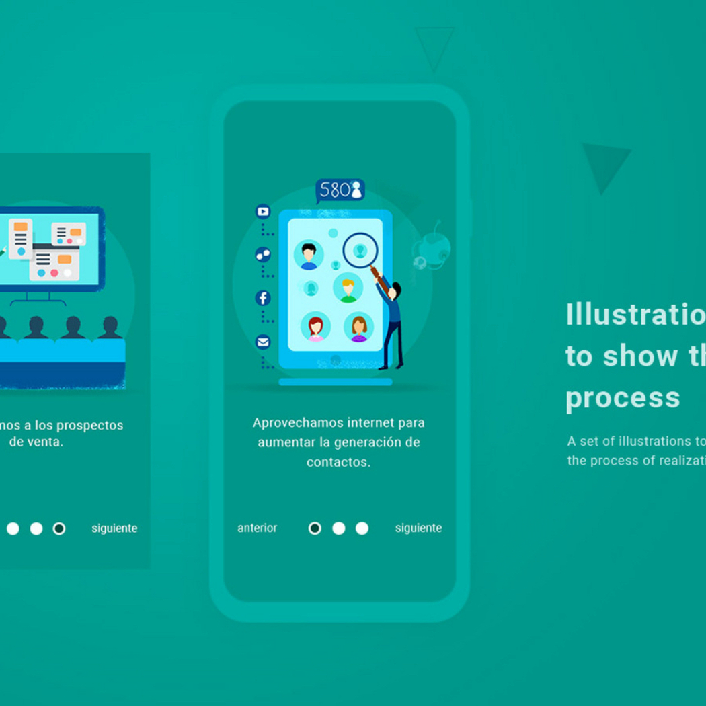
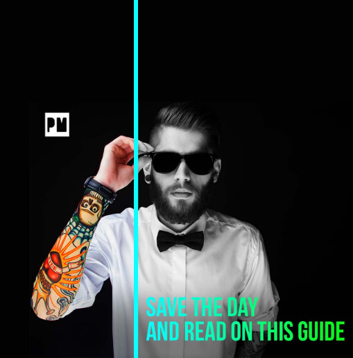
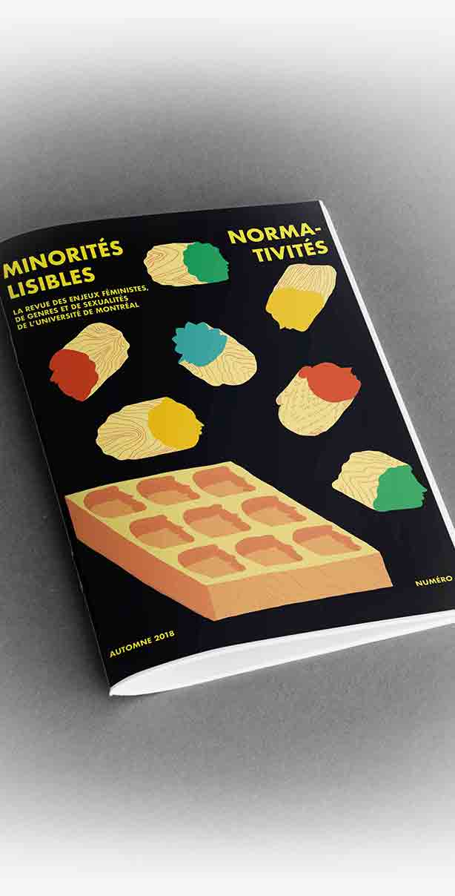

01
UI/UX · Site web
Mexico
Showroom
Une vitrine digitale plus directe pour explorer les collections et transformer la recherche en parcours fluide.
Voir le projet
Studio indépendant · Design & numérique
Je suis Ricardo Sánchez, designer UI/UX et intégrateur web. J’imagine des identités et des expériences numériques claires, vivantes et utiles.
Découvrir la sélectionTlayudo / 01—03
Une pratique à la croisée de la stratégie, de l’image et de l’interface. Chaque projet cherche le bon ton avant de chercher l’effet.
Projets choisis
01
UI/UX · Site web
Une vitrine digitale plus directe pour explorer les collections et transformer la recherche en parcours fluide.
Voir le projet
02
Identité · Design numérique
Un système graphique en mouvement qui donne à l’antenne une présence cohérente, de l’écran aux supports de communication.
Voir le projet
03
Éditorial · Branding
Une identité éditoriale engagée, pensée comme un espace de parole pour rendre visibles les récits minoritaires.
Voir le projet
Archives sélectionnées